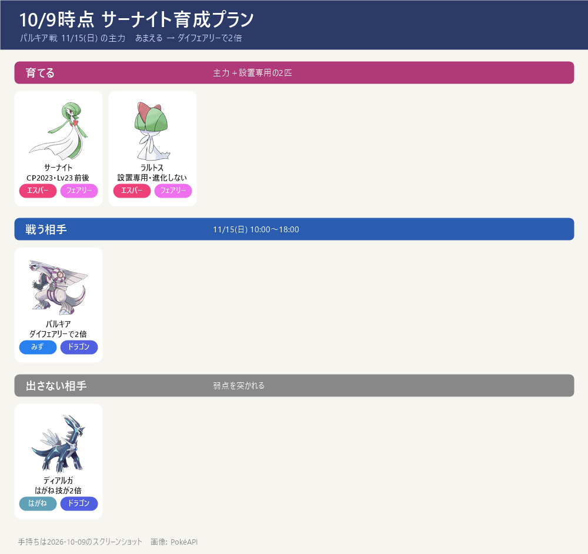

- 役割：ダイマックス パルキア（11/15 日）の主力アタッカー。あまえる → ダイフェアリーでパルキアに2倍。フェアリーなのでドラゴン技にも強い
- ディアルガ戦（11/14）には出さない（はがね技が2倍）
今の状態（10/9）

- CP2023・個体値 15/13/15（約98%）・レベル23前後（強化のすな3,500から逆算）。ダイマックス
- 手持ち：ほしのすな 227,622 ／ ラルトスのアメ 185 ／ アメXL 29 ／ 設置用にダイマックスのラルトスがもう1匹
- 通常技はねんりき（エスパー）→ パルキアに等倍。あまえるに替えるのが前提
強化の順番
- ① 通常技を あまえる に（通常わざマシン）。今の技以外の3つからランダムなので2〜3個用意。これをしないと始まらない
- ② ダイアタック Lv1 → Lv2：MP 600 ＋ アメ 100〜110（区分はゲーム内表示で確認）。威力に直結するので先に
- ③ レベル23 → 30：すな約58,000 ＋ アメ44（攻撃・耐久が約14%アップ）
- ④ 残りのアメでレベル32前後：すな約28,000 ＋ アメ約26
- ここまで（A）は今あるアメ185でできる：すな約86,000・MP 600
- ⑤ ダイアタック Lv2 → Lv3：MP 800 ＋ アメXL 40〜45（今29 → あと11〜16）。XL は設置では増えない → ラルトスを捕まえて集める（トレーナーレベル31以上）
- ダイウォール・ダイスピリットの解放（MP 400＋アメ50〜60）は見送り。受け・回復はハピナスに任せる
設置でアメを稼ぐ（2匹で1日2回）
- マックスバトルに勝ったあと、そのバトルで使ったダイマックスポケモンをパワースポットに置くと、戻るときにアメを持ち帰る（最大5個・手伝った回数で決まる）
- B：ダイアタック Lv2 ＋ レベル35（アメ約210〜220）→ 設置5〜12回 → 約3〜6日
- C：ダイアタック Lv2 ＋ レベル40（アメ約326〜336）→ 設置29〜51回 → 約15〜26日。11/15 まで約37日あるので間に合う
- MP：1日2回 × 250 ＝ 500MP（無料上限 800 の範囲）。毎日300余る → 2日分でダイアタック Lv2 の600
- コツ：人の多いパワースポットに置く（早く戻り、5個もらいやすい）。2匹目のラルトスは進化させない（キルリア25・サーナイト100のアメを使わない）
スケジュール
- 今日（10/9）：①あまえる ②ダイアタック Lv2 ③④レベル30〜32（＝A 完了）
- 〜10/11(日) 21:00：★1 マックスバトルのラルトスを回してアメ・XL を上乗せ
- 10/10〜：2匹で毎日2回設置
- 10月下旬：レベル35（B）
- 11月上旬：レベル40（C）。XL が集まればダイアタック Lv3
- 11/15(日)：パルキア戦。並び例 サーナイト／ジジーロン／ハピナス
出典: マックス技のコスト: ポケらく・攻略大百科 ／ 技: 9db・ポケらく・PvPoke ゲームデータ ／ 設置: 9db・アメブロ ／ 手持ち: スクリーンショット（2026-10-09）
画像: PokéAPI ／ 更新 2026-10-09